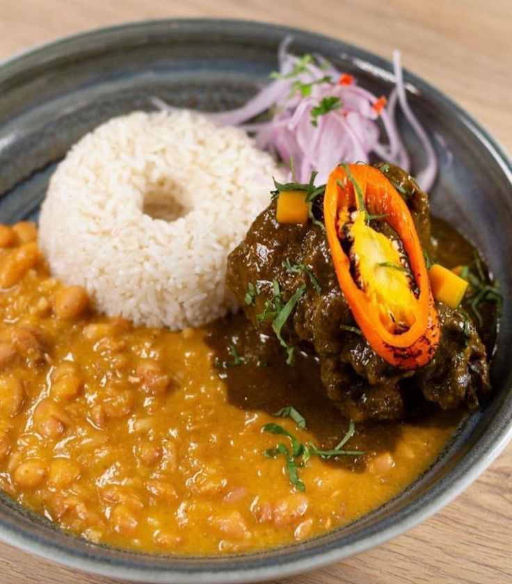
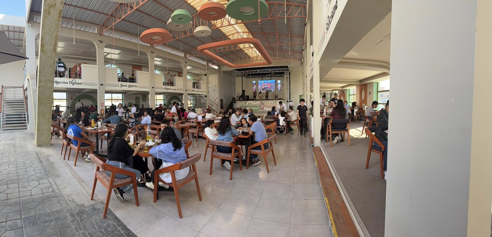

Familia Gourmet: Cabrito chiclayano que revoluciona el norte.
En Chiclayo, la gastronomía es más que una práctica cotidiana; es una expresión cultural que convoca, reúne y construye identidad. En este escenario, Familia Gourmet se posiciona como un restaurante que no solo ofrece comida, sino una experiencia integral que combina tradición, entretenimiento y cultura.
Buen Diente
El cabrito a la chiclayana: esencia de una tradición viva
Entre los platos más representativos del norte peruano, el cabrito a la chiclayana destaca por su historia y sabor. En Familia Gourmet, esta preparación se convierte en el emblema del restaurante, condensando técnica, herencia cultural y tradición en cada plato.
Cocido lentamente y sazonado con ajíes, especias y chicha de jora, el cabrito alcanza una textura suave y jugosa, acompañado de frejoles, arroz blanco, yuca sancochada y sarza criolla.
Un punto de encuentro que trasciende
Ubicado en Prolongación Bolognesi 1290, el restaurante se presenta como uno de los espacios más amplios de Chiclayo, diseñado para recibir a familias, grupos y visitantes que buscan una experiencia gastronómica completa.

Cabrito a la chiclayana: uno de los platos más representativos de la gastronomía lambayecana.
Gastronomía y entretenimiento en un solo espacio
Familia Gourmet apuesta por una experiencia que va más allá de la comida. El local ofrece shows en vivo, presentaciones de marinera y espectáculos criollos que acompañan la experiencia de los comensales.
Además, cuenta con espacios recreativos para niños, convirtiéndose en un lugar ideal para compartir en familia.

Una carta diversa
Aunque el cabrito es su plato insignia, el restaurante ofrece opciones como arroz con pato, parihuela, ceviches, lomo saltado y propuestas de fusión que amplían la experiencia gastronómica.
Experiencia del cliente
La atención, el ambiente y la organización del espacio permiten recibir a numerosos visitantes sin perder calidad en el servicio, consolidando una experiencia integral.
Un nuevo referente en Chiclayo
Familia Gourmet se posiciona como un punto de encuentro donde la tradición gastronómica se mantiene viva, adaptándose a nuevas formas de consumo y experiencia.

Más que un restaurante, Familia Gourmet representa una forma de vivir la gastronomía: un espacio donde el sabor, la cultura y la tradición se integran para ofrecer una experiencia completa en el norte peruano.